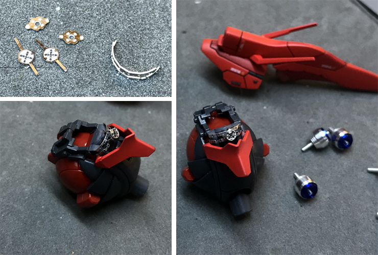
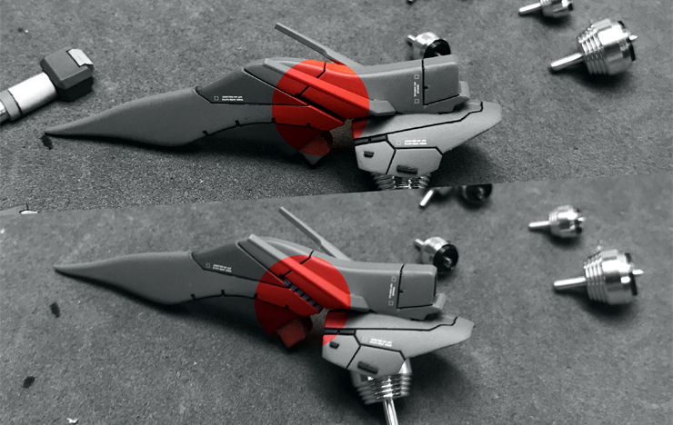

도색을 완료하고 머리르 먼저 조립합니다. 예전 사자비의 모노아이엔 메탈 플레이트를 사용했었지만, 이번엔 전용 에칭을 사용했습니다.
국산이라 그런지 디자인이나 품질, 적용성 면에서 만족스럽네요. (+중국산 모형 에칭은 버리는게 반입니다.)

위쪽 사진처럼 원래 킷에 빈 공간이 있습니다. 그래서 빈 공간에 디테일을 넣어주었습니다.
웨이브의 몰드 플레이트를 잘라서 만들었습니다. 프라판으로 뚝딱 만드는 괴수들도 있지만... 쉬운게 아니죠.
저 같은 사람들을 위해 기성품으로 좋은게 많이 나와있는걸요... ^^